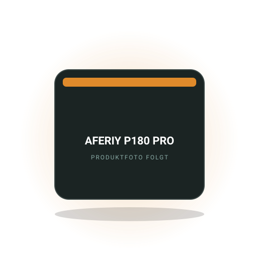

Video-Test · Batterie & Strom
AFERIY P180 PRO im Ford Nugget: 1 kWh Powerstation im Praxistest
Passt unter die Nugget-Küche, 1024 Wh LiFePO4, 1800 W Reinsinus. Alle Fakten aus dem Video von Die2Mays.
Camper · Westfalia
Alles für Besitzer des Ford Nugget von Westfalia: welche Powerstation unter die Heckküche passt, wie das Dachbett bequemer wird, welche Thermomatten auf den Transit Custom passen und wo im Nugget noch Stauraum steckt.

Redaktions-Tipp
Die 1-kWh-Powerstation, die unter die Heckküche des Nugget passt und Kaffeemaschine, Airfryer und Laptop ohne Einbau versorgt.
Warum wir es empfehlen: Der Nugget hat ab Werk nur eine kleine AGM-Zweitbatterie und keinen Wechselrichter, viele Besitzer wollen trotzdem 230-V-Geräte betreiben. Die P180 PRO ist kompakt genug für den Stauraum unter der Küche und wurde genau dort im Praxistest von Die2Mays betrieben.
Preis-Rangeca. 600 bis 800 €Stand Oktober 2026
Bei Amazon ansehenAffiliate-Link *Garantieverlängerung nach Registrierung beim Hersteller. Preis bleibt für dich gleich.
Kostenlos als PDF
Strom, Schlafen, Küche, Sanitär, Sicherheit, Werkzeug. Zum Abhaken vor jeder Fahrt, damit du nie wieder ohne Ladekabel, Wasserschlauch oder Keil losfährst.
Passt unter die Nugget-Küche, 1024 Wh LiFePO4, 1800 W Reinsinus. Alle Fakten aus dem Video von Die2Mays.
Warum das Westfalia-Dachbett vielen zu hart ist, welche Topper passen und wie du die Belüftung von unten verbesserst.
Welche Matten auf das Fahrerhaus des Transit Custom passen, was der Dachbalg braucht und wie du Kondenswasser vermeidest.
Wo im Nugget noch Platz steckt, welche Boxen in die Fächer passen und wie du Küche und Kleidung sauber trennst.
Wie lange der Frischwassertank des Nugget zu zweit reicht, wie du ihn sauber hältst und was vor dem Frost zu tun ist.

Ertrag, Aufwand, Diebstahl, Fahrzeugwechsel: Was für Serien-Camper spricht und wann das feste Dachmodul gewinnt.
Die Fragen, die am häufigsten gesucht werden. Ausführlich beantwortet, mit Zahlen, Rechenwegen und den Fehlern, die du dir sparen kannst.
Für die meisten Nugget-Besitzer ist eine Powerstation die bessere Wahl: Sie passt unter die Heckküche oder in den Stauraum unter der Sitzbank, braucht keinen Eingriff ins Bordnetz und liefert 230 V, was die Serien-Zweitbatterie des Nugget nicht kann. Eine größere Einbaubatterie lohnt sich erst, wenn du dauerhaft Kühlschrank und Standheizung über viele Tage ohne Fahrt betreiben willst.
Der Nugget hat ab Werk eine AGM-Zweitbatterie, die Kühlschrank, Licht, Wasserpumpe und Standheizung versorgt, aber keinen Wechselrichter. Wer sie gegen LiFePO4 tauscht, muss das Lademanagement des Fahrzeugs beachten, bei Euro-6-Transits mit intelligentem Generator ist ein Ladebooster nötig, und Garantiefragen mit Ford und Westfalia sind zu klären. Eine 1-kWh-Powerstation kostet ca. 600 bis 1000 €, lässt sich an der 12-V-Dose während der Fahrt und am Landstrom laden und bleibt beim Fahrzeugwechsel bei dir.
Praxis-Tipp: Die Powerstation so platzieren, dass der Lüfter frei bleibt und du sie zum Laden nicht ausbauen musst. Unter der Küche sitzt sie nah an der Küchenzeile für Kaffeemaschine oder Airfryer. Im Hochsommer nicht im geschlossenen Fahrzeug in der Sonne lassen.
Ein Topper mit 4 bis 6 cm Höhe aus Kaltschaum oder Viscoschaum, zugeschnitten auf das Dachbettmaß des Nugget, löst das Problem für die meisten. Darunter gehört eine Unterlage aus Abstandsgewirk oder Tellerfedern, damit Feuchtigkeit abziehen kann. Zusammen ca. 150 bis 350 €.
Die Serienmatratze im Nugget-Aufstelldach ist dünn, weil das Dach beim Schließen flach bleiben muss. Sie liegt direkt auf der Dachplatte, die nachts kalt wird, sodass sich Kondenswasser zwischen Matratze und Platte sammelt. Ein Topper bringt Komfort, ein belüftetes Unterbett verhindert Schimmel. Viele Besitzer nutzen einen zweiteiligen Topper, der sich beim Schließen des Dachs einklappen lässt und oben bleiben kann. Prüfe vor dem Kauf, wie viel Höhe das geschlossene Dach erlaubt, sonst drückt der Topper auf den Balg oder das Dach schließt nicht sauber.
Typischer Fehler: Topper mit zu weichem Schaum, in den du einsinkst, dann fehlt Platz zum Umdrehen. Und das Dach morgens mit noch feuchtem Topper schließen. Nach kalten Nächten das Bett erst lüften, Topper hochklappen, dann schließen. Bei Dauerregen lieber unten schlafen. Zum Ratgeber Nugget Dachbett
Das Aufstelldach ist die Wahl für alle, die den Nugget als Alltagsauto nutzen und in Tiefgaragen müssen, das Hochdach für Ganzjahrescamper und Familien, die oben dauerhaft Stauraum und ein festes Bett wollen. Preislich liegt das Hochdach meist etwas über dem Aufstelldach.
Mit Aufstelldach bleibt der Nugget unter zwei Metern hoch und fährt sparsamer und leiser, das Dachbett ist aber nur im aufgestellten Zustand nutzbar und der Stoffbalg isoliert im Winter schlecht. Das Hochdach bringt ein festes, isoliertes Dachbett, das tagsüber als Stauraum dient, Stehhöhe über die ganze Länge und deutlich bessere Wintertauglichkeit, kostet aber Windanfälligkeit, Verbrauch und die Tiefgarage. Beim Nugget Plus mit längerem Radstand kommt ein Bad mit Toilette hinzu, dort ist das Hochdach besonders verbreitet.
Entscheidungshilfe: Wer vor allem im Sommer zu zweit reist und das Fahrzeug täglich bewegt, ist mit dem Aufstelldach gut bedient. Wer mit Kindern oder im Winter unterwegs ist, oft länger steht und Platz für Bettzeug braucht, nimmt das Hochdach. Gebraucht sind Aufstelldach-Nuggets häufiger und oft günstiger.
Der Nugget wird mit einer Diesel-Luftstandheizung ausgeliefert, die aus dem Fahrzeugtank gespeist wird und den Wohnraum über Luftauslässe beheizt. Der Verbrauch liegt in einer kühlen Nacht bei etwa 1 bis 2 Litern Diesel, der Strombedarf bei 100 bis 300 Wh aus der Zweitbatterie.
Die Heizung lässt sich am Bedienteil oder je nach Baujahr per Timer programmieren. Im Aufstelldach kommt die Warmluft nur bedingt oben an, weil die Auslässe unten im Wohnraum sitzen und der Balg die Wärme schnell abgibt. Eine Isolierung für den Dachbalg und eine Umlenkung der Warmluft nach oben verbessern das deutlich. Für Winterurlaube in den Bergen ist zu prüfen, ob die verbaute Heizung eine Höhenanpassung hat, sonst rußt sie ab etwa 1500 Metern. Bei leerer Zweitbatterie schaltet die Heizung ab, daher vor kalten Nächten den Ladezustand prüfen oder die Standheizung über eine Powerstation puffern.
Oft vergessen: Die Heizung einmal im Monat auch im Sommer 20 Minuten laufen lassen, damit Pumpe und Brenner nicht verharzen. Und den Abgasauslass unter dem Fahrzeug frei halten, im Schnee oder auf hohem Gras setzt sich die Heizung sonst auf Störung.
Für die Schiebetür des Nugget gibt es passende Mückennetze mit Magnet- oder Reißverschluss, die mit Klettband am Türrahmen befestigt werden, Preis ca. 60 bis 150 €. Für die Heckklappe sind Netze seltener, weil die offene Klappe mit Heckküche darunter ohnehin selten als Durchgang dient.
Das Aufstelldach des Nugget hat ab Werk Netze in den Balgfenstern, die Schiebetür nicht. Weil der Nugget abends meist mit offener Schiebetür steht, ist das Netz dort die wichtigste Nachrüstung. Netze mit umlaufendem Klett schließen dicht, lassen sich aber nicht spurlos entfernen, Netze mit Magnetleisten halten am Blech des Türrahmens und sind schneller montiert. Beim Nugget Plus mit Bad ist der Türausschnitt identisch mit dem kurzen Nugget. Für die Fahrerhausfenster gibt es Netzüberzüge, die über die geöffnete Tür gezogen werden und nachts Durchzug ohne Mücken erlauben.
Typischer Fehler: Netz kaufen, das für den Transit Custom als Transporter gedacht ist, aber nicht an der Innenverkleidung des Nugget vorbeiläuft. Auf die Westfalia-Ausstattung achten. Und das Netz vor dem Schließen der Schiebetür komplett wegklappen, sonst klemmt es in der Dichtung und reißt.
Noch nicht geholt?
120 Punkte nach Bereichen sortiert. Dazu neue Video-Tests und Ratgeber, sobald sie online sind.